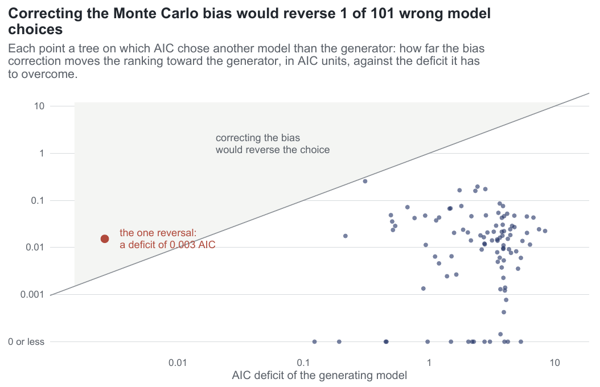
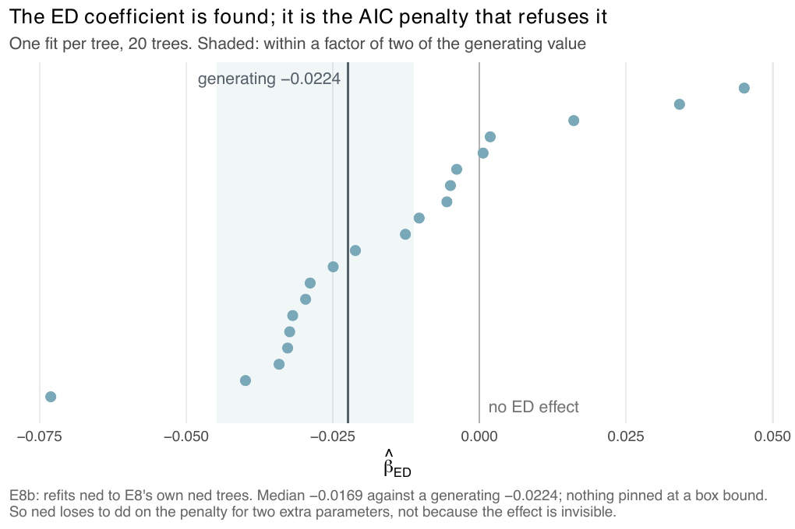

E8 — Can Monte Carlo bias change a model ranking? (unequal precision)
| Status | complete (E8 and E8b, 120 rankings each; E8b's coefficient arm, 20 fits); the bias magnitudes hold; the guard's silence on variance describes the build of the run: from emphasis f30a791 the package warns when the chosen fit has an ESS below 10 |
| Package build | library e8 at 4f42b27; the audit found it identical to a clean build except for ned on the thinning proposal, which E8 does not use |
| Driver / analysis | sim/E8-unequal-precision.R; coefficient arm sim/E8b-edcoef.R; figure fig-study-guard in sim/figures-study.R |
| Data | results/E8/unequal-precision.csv, results/E8b/unequal-precision.csv (120 rows each), results/E8coef/edcoef.csv (20 rows) |
Question
AIC is built from a log-likelihood that is the log of a Monte Carlo mean, so each model's value is biased downward (Jensen's inequality) by an amount that grows as its own effective sample falls. The amounts do not cancel between models: the model that is harder to sample is penalised for being harder to sample. compare_models() carries each fit's effective sample and Jensen gap and flags a ranking when the gaps could reorder it, but that guard had been exercised only on constructed fits and two real ones. E2 measured selection without making this asymmetry a factor. E8 asks whether the bias decides rankings in practice and whether the guard fires when it should.
Design
| parameter | value | meaning |
|---|---|---|
| generators | cr, dd, ned |
20 trees each, the same trees in E8 and E8b |
| candidates | cr, dd, ed, ned |
every tree fitted with all four, in both arms |
| target tips | 100 (accepted 60-160) | observed medians 106.5 (cr), 106.5 (dd), 136.5 (ned) |
| \(\lambda_0\), turnover, crown | 0.5, 0.25, 15 | turnover from the driver constant TURN <- 0.25; not a CSV column |
ned effect |
\(-0.15\lambda\) | \(\beta_{ED} = -0.15\,\lambda_0/\overline{\mathrm{ED}}\), \(K\) calibrated to 100 tips |
| equal arm | 300 draws for every candidate | the design said 400 |
| unequal arm | generator 100 draws, every rival 800 | the design said 100 vs 1600; the files record 800 |
| iterations | E8: max_iter 30; E8b: max_iter 100 |
from the stop records and the max_iter column |
| clock | 1800 s per fit | |
| proposal, link | surrogate (bdi), linear |
|
| box and start | from the observed tree alone (sim/box.R) |
\(\lambda_0 = \log n/T\) sets the intercept range; covariate slots scaled by \(\lambda_0/n\) and \(\lambda_0/\overline{\mathrm{ED}}\) |
The handicap in the unequal arm is aimed at the true model on purpose: that is the setting that can produce a flip, and a user cannot avoid it because they do not know which model is true. The box comes from the tree rather than from the generating values so that rival candidates, which have no generating values, are not boxed arbitrarily. Chosen model = minimum AIC of the four.
The draw counts disagree between sources: 00-design.md and the driver defaults give equal 400 and unequal 100 vs 1600; the files record 300/300 and 100/800 (draws_gen, draws_rival); report/report.tex says 100 vs 800; the supplement and methods-study.tex say 1600. The files are used here.
Pre-set rule
Descriptive (00-design.md §E8). Readout: a \(2\times2\) of (model chosen correctly / incorrectly) \(\times\) (guard flagged / silent), per generating model and arm; and for every wrong choice, whether twice the gap difference covers the AIC margin, i.e. whether the gap alone could account for it. Decision: whether the guard's threshold is where it should be.
Results
Share of trees on which the generator is chosen, the chosen counts (cr/dd/ed/ned), and the median ESS of the generator's fit:
| run | generator | arm | correct | chosen cr/dd/ed/ned | ESS of generator fit | flagged |
|---|---|---|---|---|---|---|
| E8 | cr | equal | 0.85 | 17/0/3/0 | 300 | 0 |
| E8 | cr | unequal | 0.95 | 19/0/1/0 | 100 | 0 |
| E8 | dd | equal | 0.85 | 2/17/0/1 | 164 | 0 |
| E8 | dd | unequal | 0.85 | 2/17/0/1 | 51 | 0 |
| E8 | ned | equal | 0.05 | 2/16/1/1 | 35 (2 < 10) | 0 |
| E8 | ned | unequal | 0.05 | 1/17/1/1 | 27 (3 < 10) | 0 |
| E8b | cr | equal | 0.90 | 18/0/2/0 | 300 | 0 |
| E8b | cr | unequal | 0.90 | 18/0/1/1 | 100 | 0 |
| E8b | dd | equal | 0.70 | 5/14/0/1 | 195 | 0 |
| E8b | dd | unequal | 0.80 | 4/16/0/0 | 68 | 0 |
| E8b | ned | equal | 0.05 | 6/12/1/1 | 53 (2 < 10) | 0 |
| E8b | ned | unequal | 0.00 | 5/14/1/0 | 30 (1 < 10) | 0 |
- The guard flagged 0 of 240 rankings.
- Wrong choices: 48 (E8) + 53 (E8b) = 101. On 1 of 101 does twice the gap difference reach the AIC margin: an E8
nedtree in the equal arm (tree 18) whose margin is 0.0026 AIC. The margins of wrong choices run from 0.003 to 8.4 AIC; twice the gap difference reaches at most 0.25 AIC, and is zero or negative (moves the ranking away from the generator) on 14 of 101. - The package's own
swingcolumn, a different quantity, reaches the margin on 3 of 101 (maximum 0.98); the "1 of 101" uses the figure's definition, \(2(g_{gen} - g_{best})\). - A wrong choice whose leader rests on fewer than 10 effective draws: 1 (E8) and 2 (E8b). The guard does not warn on variance.
- How the fits ended (480 per run): E8 283 on the 30-iteration cap, 172 on the clock, 25 converged; E8b 243 on the 100-iteration cap, 161 on the clock, 76 converged.

E8b — is the ED term unfound, or found and too small to buy its penalty?
00-design.md has the heading for E8b and no body; its content is in the driver header of sim/E8b-edcoef.R and in the files. E8b has two parts.
The rerun at 100 iterations (results/E8b/unequal-precision.csv): the E8 design on the same trees (identical tip counts tree by tree) with max_iter 100 instead of 30. Its rows are in the table above. The correct-choice rates move by at most 0.15 (dd equal arm 0.85 → 0.70) and the ned rows stay at 0.00-0.05.
The coefficient arm (results/E8coef/edcoef.csv, called E8coef in ledger B). E8 lost ned to dd on 1 of 20 and then 0 of 20 trees, and records AIC, gap and ESS but not coefficients, so it could not tell an estimator that does not find the effect from one that finds it while AIC refuses the two extra parameters. E8b fits ned alone to E8's own ned trees (same seeds, same design, same box), 300 draws, max_iter 100, 1800 s clock, and records \(\hat\beta_{ED}\).
| quantity | value |
|---|---|
| median \(\hat\beta_{ED}\) vs generating | -0.0169 vs -0.0224 → ratio 0.75 (quartiles 0.12 to 1.43) |
| right sign | 15 of 20 |
| median ESS | 58.8 (1 fit below 10) |
| stops | 5 on the iteration cap, 15 on the clock, 0 converged |
| estimates at a box bound | 0 |
No decision rule was registered for E8b.

ned fit per tree on E8's 20 ned trees: the fitted \(\beta_{ED}\) against the generating -0.0224 (dark line). Shaded: within a factor of two of the generating value; 10 of 20 points fall in it and 5 are on the wrong side of zero.E8b's reading: the coefficient is found, at 0.75 of its value with the right sign on 15 of 20 trees, on fits that mostly ended on their clock; ned loses to dd because a -0.15\(\lambda\) effect at turnover 0.25 does not pay for two parameters at 100 tips, not because the estimator misses it. That is the question E12 and E16 take up.
Conclusion
Descriptive rule; the readout is complete. The Monte Carlo bias is measurable and does not decide these rankings: corrections are of order 0.01-0.25 AIC against deficits of order 1, and only a tie at 0.003 AIC would flip. The guard's silence on all 240 rankings is consistent with that. The unequal handicap did not lower the rate at which cr and dd were recovered. The ned rows measure something else: at turnover 0.25 an effect of -0.15\(\lambda\) is below the power floor (E12, E16), so dd wins on 12 to 17 of 20 ned trees in every arm and those rows are not a test of the guard. In this run the guard did not cover variance: leaders on fewer than 10 effective draws occur among wrong choices and passed without a warning. From emphasis f30a791 the package warns when the chosen fit has an ESS below 10, so that statement describes the build E8 ran on.
Related
- E2 — measured selection without unequal precision.
- E12 — E8's "estimable but not selected" at one effect and size, turned into a power map.
- E16 — E12's grid at E8's turnover of 0.25.
- E23 and E27 — the ranking read as the fewest parameters within 2 AIC (the reading
compare_models()adopted atf30a791).